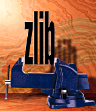

A Massively Spiffy Yet Delicately Unobtrusive Compression Library
(Also Free, Not to Mention Unencumbered by Patents)
(Not Related to the Linux zlibc Compressing File-I/O Library)
Welcome to the zlib home page, web pages originally created by
Greg Roelofs
and maintained by Mark Adler.
If this page seems suspiciously similar to the
PNG Home Page, rest assured
that the similarity is completely coincidental. No, really.
zlib was written by
Jean-loup Gailly (compression) and
Mark Adler
(decompression).
Current release:
zlib 1.3.2
February 17, 2026
Version 1.3.2 has these key updates from 1.3.1:
- Address findings of the
7ASecurity audit of zlib.
- Check for negative lengths in crc32_combine functions.
- Copy only the initialized window contents in inflateCopy.
- Prevent the use of insecure functions without an explicit request.
- Add compressBound_z and deflateBound_z functions for large values.
- Use atomics to build inflate fixed tables once.
- Add --undefined option to ./configure for UBSan checker.
- Copy only the initialized deflate state in deflateCopy.
- Zero inflate state on allocation.
- Add compress_z and uncompress_z functions.
- Complete rewrite of cmake support.
- Remove untgz from contrib.
- Vectorize the CRC-32 calculation on the s390x.
- Remove vstudio projects in lieu of cmake-generated projects.
- Add zipAlreadyThere() to minizip zip.c to help avoid duplicates.
- Add deflateUsed() function to get the used bits in the last byte.
- Fix bug in inflatePrime() for 16-bit ints.
- Add a "G" option to force gzip, disabling transparency in gzread().
- Return all available uncompressed data on error in gzread.c.
- Support non-blocking devices in the gz* routines.
Version 1.3.1 has these key updates from 1.3:
- Reject overflows of zip header fields in minizip.
- Fix bug in inflateSync() for data held in bit buffer.
- Add LIT_MEM define to use more memory for a small deflate speedup.
- Fix decision on the emission of Zip64 end records in minizip.
- Add bounds checking to ERR_MSG() macro, used by zError().
- Neutralize zip file traversal attacks in miniunz.
- Fix a bug in ZLIB_DEBUG compiles in check_match().
You can also look at the complete Change Log.
-
Canonical URL:
https://zlib.net/ (US)

zlib is designed to be a free,
general-purpose, legally unencumbered -- that is, not covered by any patents
-- lossless data-compression library for use on virtually any computer hardware
and operating system. The zlib data format is itself portable across
platforms. Unlike the LZW compression method used in Unix compress(1)
and in the GIF image format, the compression method currently used in zlib
essentially never expands the data. (LZW can double or triple the file size in
extreme cases.) zlib's memory footprint is also independent of the input data
and can be reduced, if necessary, at some cost in compression. A more precise,
technical discussion of both points is available on
another page.
zlib was written by
Jean-loup Gailly (compression) and
Mark Adler
(decompression). Jean-loup is also the primary author of
gzip(1), the author of the comp.compression FAQ list and
the former maintainer of
Info-ZIP's Zip;
Mark is also the author of gzip's and
UnZip's main
decompression routines and was the original author of Zip. Not surprisingly,
the compression algorithm used in zlib is essentially the same as that in
gzip and Zip, namely, the `deflate' method that originated in
PKWARE's PKZIP 2.x.
Mark can be reached via e-mail at
.
Please read the FAQ and
the manual before asking for help.
Nearly all of the questions we get already have an
answer in the zlib documentation. Questions on the usage of zlib are
best answered on Stack Overflow.
zlib development contributions and issues are best addressed on
zlib's GitHub repository.
The deflate and zlib specifications both achieved official Internet RFC status in May 1996,
and zlib itself was adopted in version 1.1 of the Java Development Kit (JDK), both as a
raw class and as a component of the JAR archive
format.
The lovely zlib-vise image above was provided courtesy of Bruce Gardner, art
director of Dr. Dobb's Journal. It
appears in Mark Nelson's article in the January 1997 issue (see below).
The current release is publicly available here:
-
 zlib source code, version 1.3.2, tar.gz format (1468K,
SHA-256 hash bb329a0a2cd0274d05519d61c667c062e06990d72e125ee2dfa8de64f0119d16):
zlib source code, version 1.3.2, tar.gz format (1468K,
SHA-256 hash bb329a0a2cd0274d05519d61c667c062e06990d72e125ee2dfa8de64f0119d16):
-
US (zlib.net) (GPG signature)
-
zlib source code, version 1.3.2, tar.xz format (1289K,
SHA-256 hash d7a0654783a4da529d1bb793b7ad9c3318020af77667bcae35f95d0e42a792f3):
-
US (zlib.net) (GPG signature)
-
zlib source code, version 1.3.2, zipfile format (1579K,
SHA-256 hash e8bf55f3017aa181690990cb58a994e77885da140609fc8f94abe9b65d2cae28):
-
US (zlib.net) (GPG signature)
Permalink for the most recent release:
-
https://zlib.net/current/zlib.tar.gz
Note that zlib is an integral part of
libpng and
has been tested extensively as part of many
PNG-supporting
applications.
zlib Information
-
zlib Frequently Asked Questions
-
Zlib-announce mailing list
-
New versions of zlib are announced on this list.
-
Zlib-devel mailing list
-
Please do not send questions or comments about zlib to
this mailing list. Send those directly to the authors at
after checking the FAQ and
the manual, of course. The zlib-devel list is for the development of
zlib—members are contributors to and testers of new versions of zlib.
-
zlib Manual
-
zlib Usage Example
-
zlib Technical Details
-
zlib-related specifications:
-
Deflate stream disassembler.
infgen.c produces a readable description of a gzip, zlib, or
raw deflate stream.
-
zlib's Deflate Algorithm
-
zlib's deflate flush modes
-
zlib License
-
All released versions of zlib
-
zlib on github
CRC (Cyclic Redundancy Check) Bonus Information
-
Ross Williams' classic "A Painless Guide to CRC Error Detection Algorithms"
-
Code to generate any CRC, with a list of CRC
descriptions. crcany.c can take a description of a CRC and
compute that CRC efficiently. It includes bit-wise, table-driven
byte-wise, and table-driven word-wise CRC algorithms.
-
Code to modify a message so that it generates the
desired CRC. spoof.c takes an abbreviated description of
the CRC, the exclusive-or of the current CRC of the message and the
desired CRC, the length of the message, and a list of bit locations in
a message, and tells you which of those bits should be inverted in the
message to get the desired CRC. Note that it does not need the message
itself, due to the linearity property of CRCs.
ZIP File Processing Bonus Software
-
Code to read a zip file as a stream and extract
its contents. sunzip.c will read a zip file from stdin
and extract the files therein that use compression methods 0, 8, 9, or
12 (stored, deflate, deflate64, or bzip2). It accepts Zip64 input.
-
Code to merge multiple zip files into a single
zip file. zipknit.c accepts Zip64 input files, and will
create Zip64 output if the combined size of the merged zip file
warrants it. All compression formats are permitted, since no
decompression or recompression is performed. Encrypted entries are
permitted, and pass through unscathed.
Related External Links
-
zlib for Linux, both shared and
static plus headers (RPM format, many
architectures)
-
zlib for Solaris (alternate)
-
zlib for macOS (Mac OS X): zlib is already included as part of macOS
-
zlib for Palm Pilot
-
zlib for Newton OS
-
zlib for Windows CE
-
zlib for Windows
9x/NT/2000/XP/2003 (DLL version, plus related utilities)
-
zlib for Windows 9x/NT (DLL and static version)
-
DotNetZip zip file manipulation for .NET, and more (including replacements for the
buggy Microsoft GZipStream and DeflateStream classes)
-
zlib for .NET in C#
-
zlib DLL wrapper for .NET in C#
-
Zip for .NET
-
Mark Nelson's ZlibTool article (January 1997)
-
zlib C++ wrapper for the
gz* functions.
-
C++ zlib and gzip filters in an iostream framework.
-
zlib
32-bit OCX
(C++ source and binaries for use with Visual Basic 4.x or
Delphi 2.0)
-
(unsupported VB5 binary also available)
-
zlib Delphi 5 interface
-
(includes compiled object files and corresponding C++ Builder 5
project files)
-
zlib Perl interface (source code; look for Compress-Zlib*.tar.gz)
-
zlib Python
interface (online manual; part of the standard library as of
Python 1.5)
-
zlib Tcl
interface mkZiplib
-
zlib Haskell
interface
-
zlib Java interface (see also JAR format)
-
zlib reimplementation in pure
Java
-
(not tested by us, but looks like a good alternative to
java.util.zip)
-
Random access for gzip archives, for Java
-
Gilles Vollant's zlib-based
mini-zip and
mini-unzip
-
(see also Info-ZIP's UnZip,
which optionally can be compiled with zlib)
-
Scott Ludwig's zlib-based
CExe executable compressor for Win32
-
zlib technical issues, including spec errors
-
Zip Files: History, Explanation and Implementation
-
zlib information in Japanese
-
zlib information in Russian
-
Real World Scanning and Halftones
(second edition includes a section on zlib)
-
Markus Oberhumer's
LZO `real-time' data compression library
-
(not tested by us, but looks like a good alternative if you need
more speed and less compression)
-
lz4, a very fast compression algorithm
-
(not tested by us, but looks like an even better alternative if you need
more speed and less compression)
-
Zstandard, a better compression algorithm
-
(not tested by us, but appears to be a better alternative to zlib
in both dimensions of compression and speed, as well as
decompression speed)
-
libbzip2
-
(not tested by us, but looks like a good alternative if you need
more compression and less speed)
-
PPP Deflate Protocol
(RFC 1979)
-
Info-ZIP Home Page
-
Portable Network Graphics (PNG)
Home Page
-
gzip Home Page
-
pigz (parallel gzip) Home Page
-
DataCompression.info
-
comp.compression Frequently Asked Questions list
Send comments or questions about zlib to the authors at
after checking the FAQ and the
manual.
Please report broken links to
(PGP key).
This page last updated Feb 17th, 2026.